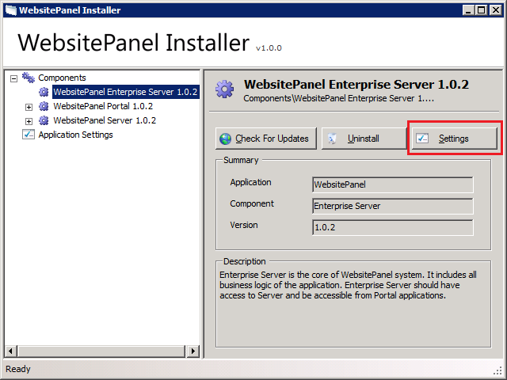
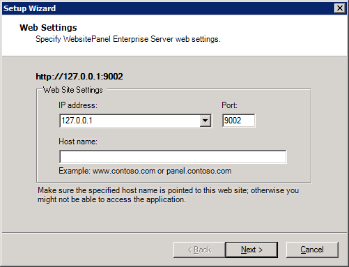
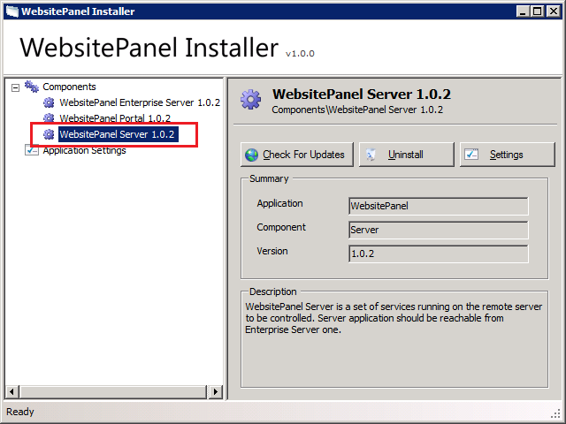

Configuring WebsitePanel Components
Translations:
Changing WebsitePanel Web Site Settings
To change web site settings (listening IP addresses and port) for any WebsitePanel component open WebsitePanel Installer and click the component in the left navigation tree. Click "Settings" button on the component properties page:

The first dialog of "Change Settings" wizard is "Web Settings":

Specify or select new IP address to listen, specify TCP port and optional host name. Click "Next" button to save changes and go the next step. Skip all the rest of steps till the end of wizard.
Changing Enterprise Server URL in Portal Settings
To work correctly WSP Portal must have a correct URL to Enterprise Server web site.
To change Enterprise Server URL in Portal settings open WebsitePanel Installer and click "WebsitePanel Portal" component in the left navigation tree. Click "Settings" button on the component properties page.
Skip the first "Web Settings" dialog by clicking "Next" button.
Change Enterprise Server URL and click "Next" button to continue wizard.
Default Enterprise Server URL is http://127.0.0.1:9002
Changing Enterprise Server “serveradmin” Password
To reset control panel "serveradmin" password open WebsitePanel Installer and click "WebsitePanel Enterprise Server" component in the left navigation tree. Click "Settings" button on component properties page.
Click "Next" button to skip the first "Web Settings" dialog.
On "Set Administrator Password" dialog tick "Reset Serveradmin Password", specify new password and click "Next" button.
Changing Server Access Password
If you are trying to register a new WSP Server instance on "Configuration -> Servers -> Add Server" page in control panel, but forgot password set during WSP Server installation you could easily reset it using WSP Installer.
To reset server access password open WebsitePanel Installer on the server where WSP Server is installed and click "WebsitePanel Server" component in the left navigation tree:

Click "Settings" button on component properties page. Skip the first "Web Settings" dialog.
On "Set Server Password" dialog tick "Reset Server Password", specify new password and click "Next" button.